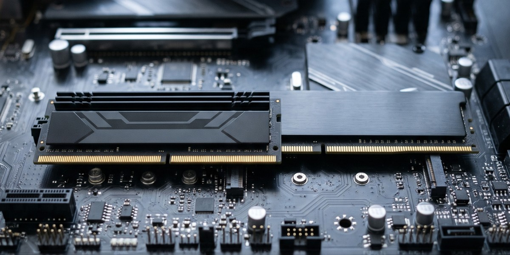

Geekotidien · Édition du 20 novembre 2026
DDR6 : premières specs du JEDEC
Norme encore en développement

Le JEDEC, organisme de normalisation, présente les grandes lignes de la DDR6, norme encore en développement. Elle démarrerait à 12,8 GT/s, avec une feuille de route vers 14,4 GT/s, soit plus de 50 % de bande passante en plus que la DDR5.
Le bus de données passe de 64 à 96 DQ, la densité maximale des puces atteint 128 Go contre 64 Go en DDR5, et les modules mesurent 74 mm contre 133 mm. Aucune date de commercialisation n'est annoncée.
Christopher Cox, président du comité JC-42, justifie cette évolution par les besoins de l'IA et des charges intensives en données. L'article précise que la hausse de bande passante ne se traduira pas forcément par un gain de performances équivalent.
Le + : Modules de 74 mm contre 133 mm pour la DDR5.